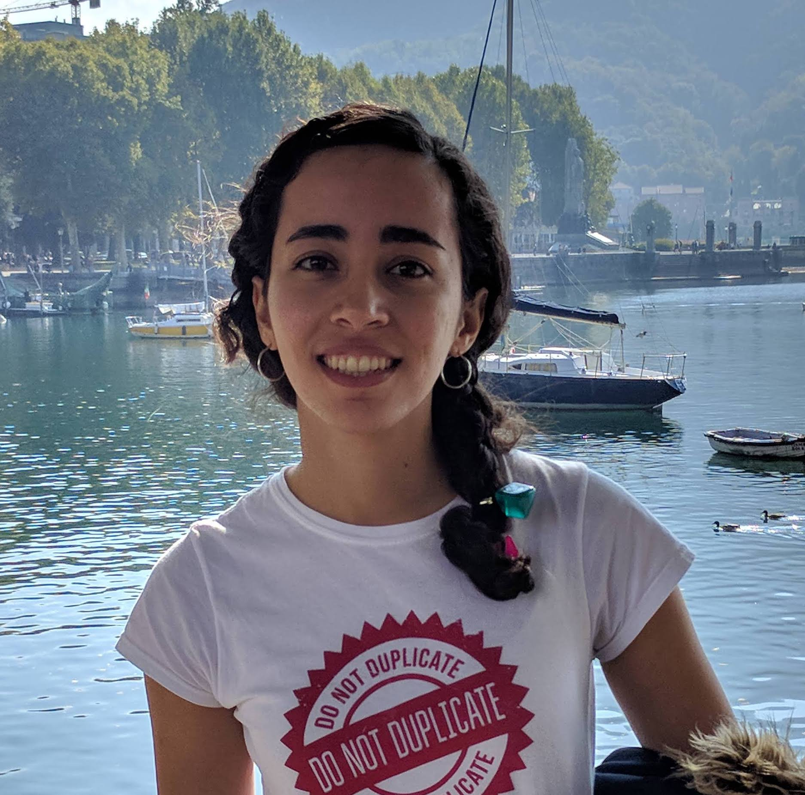

Hello!
I am an MSc student of Computer Science at ETH and I live in the beautiful city of Zurich, Switzerland.
Prior to Zurich, I was living in my hometown, the wonderful city of Tehran, Iran. I studied Software Engineering at University of Tehran, Iran.
During my MSc studies, I moved to Paris, the city of lights, for 6 months long internship in Google France.